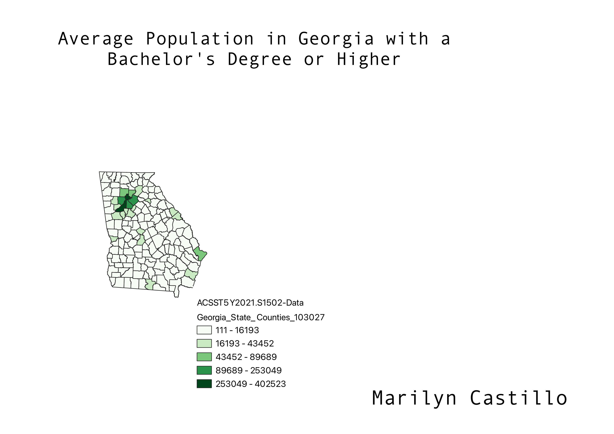

Homework 6: Census Data Choropleth
Marilyn Castillo-Ibarra
I decided to do Georgia as my state. I looked at their education census. I looked at one about how many people in each county have their bachelor's degree or higher. As you can see norther GA has the most population with bachelor's degrees

Data used for this Project
CSV Data
Link to shapefile